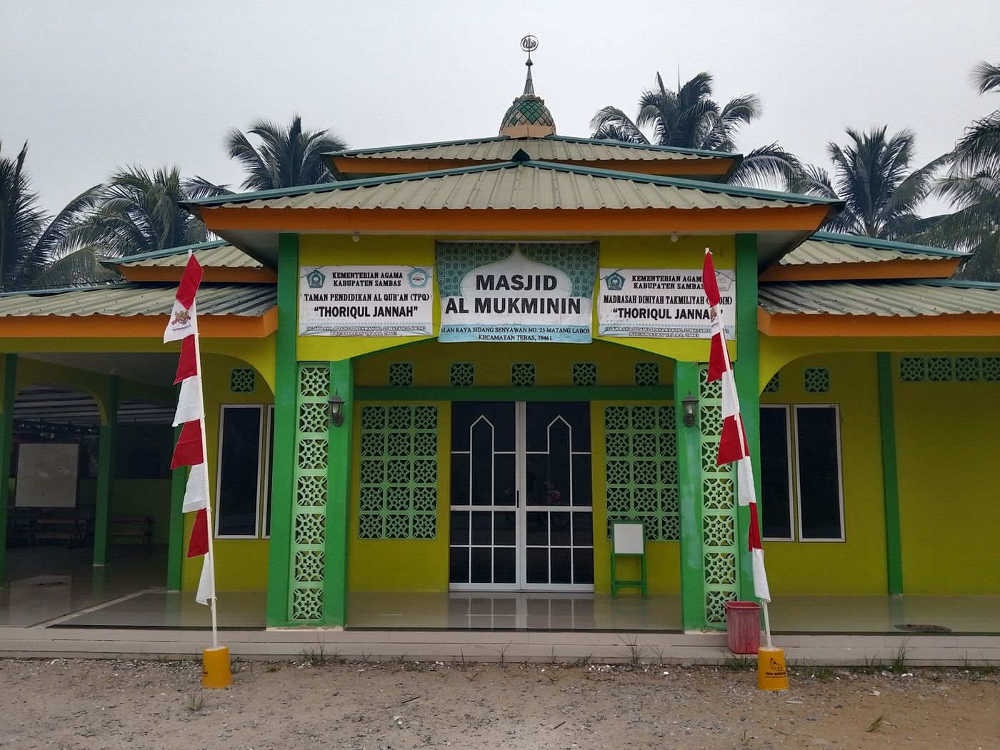
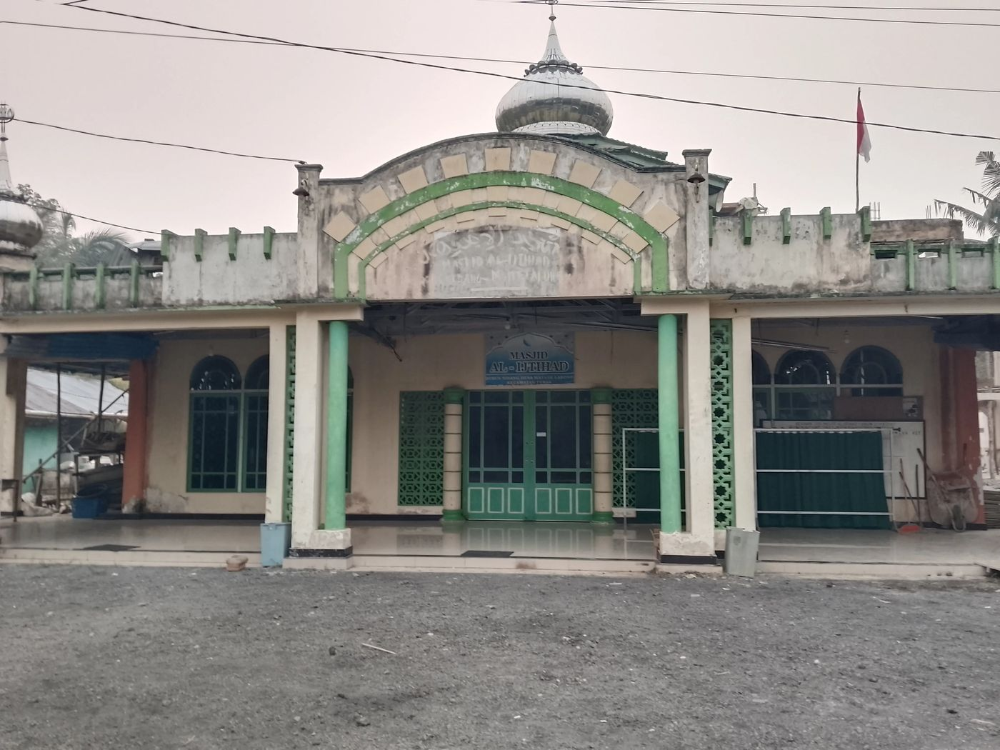
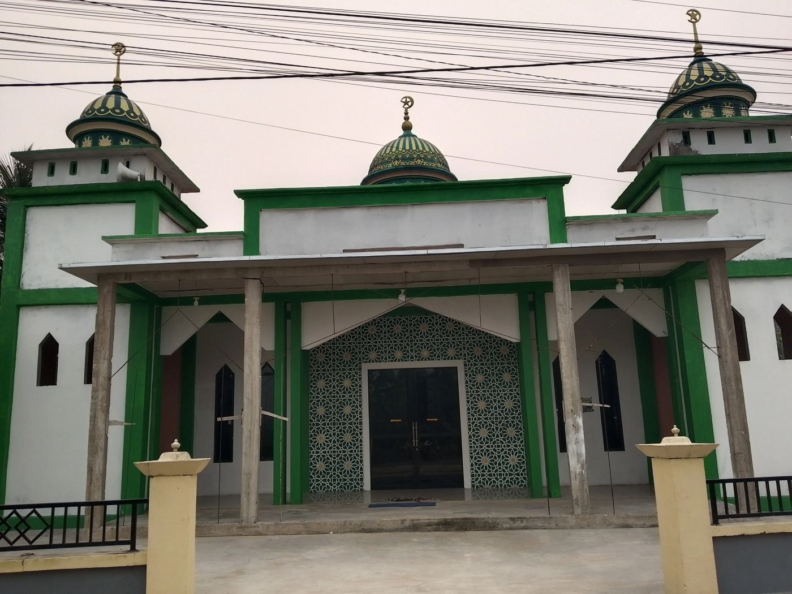
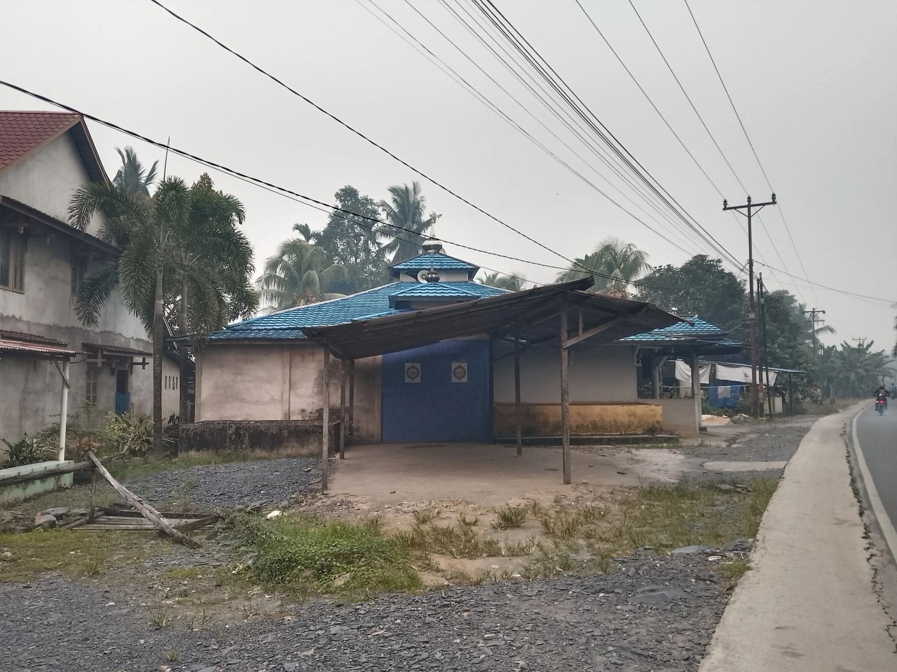

// Pemerintahan
Fasilitas umum
Kantor Desa

Kantor Desa Matang Labong
Pusat pelayanan administrasi warga, tempat Kepala Desa Ir. Hidayat dan perangkat desa bertugas.
📍 Buka di Google Maps
Pusat pelayanan administrasi warga, tempat Kepala Desa Ir. Hidayat dan perangkat desa bertugas.
📍 Buka di Google MapsDesa ini tercatat memiliki sekitar 6 masjid dan beberapa surau, tersebar di 4 dusun.

Jl. Raya Sidang Senyawan No. 25, Matang Labong, Kec. Tebas, 79461. Juga menaungi TPQ dan Madrasah Diniyah Takmiliyah.
📍 Buka di Google Maps
Masjid warga di Dusun Sidang, Desa Matang Labong.
📍 Buka di Google Maps
Salah satu masjid besar di desa dengan tiga menara berkubah hijau-emas.
📍 Buka di Google Maps
Masjid warga dengan ciri khas atap genteng biru di tepi jalan desa.
📍 Buka di Google Maps